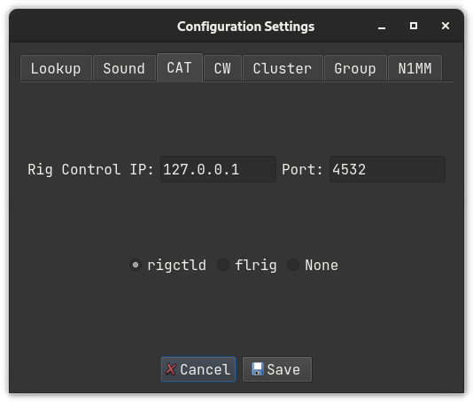
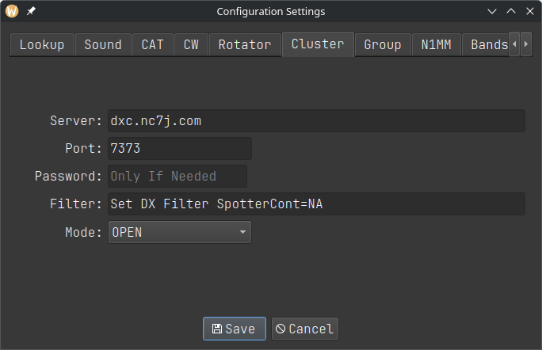
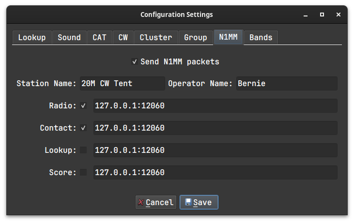
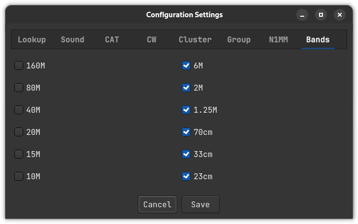

Configuration Settings
To setup CAT control, CW keyer, and callsign lookups select File >> Configuration Settings.
The tabs for groups and N1MM are disabled and are for future expansion.

Callsign Lookup
Two services are supported: QRZ and HamQTH. Username and password are required so enter that information here.
CAT Control
Under the ‘CAT‘ tab, you can choose one of the following:
-
‘rigctld‘ normally with an IP of ‘127.0.0.1‘ and a port of ‘4532‘
-
‘flrig‘ normally with an IP of ‘127.0.0.1‘ and a port of ‘12345‘
-
‘None‘ is always an option (but is it really?).
A small transceiver icon changes color to indicate the CAT status. Green: Connected; Red: Not connected; Grey: Neither.
CW Keyer Interface
Under the ‘CW‘ tab, there are three options:
-
‘cwdaemon‘ normally uses IP ‘127.0.0.1‘ and port ‘6789‘
-
‘pywinkeyer‘ normally uses IP ‘127.0.0.1‘ and port ‘8000‘
-
‘CAT‘ can be used if your radio supports it. Morse characters are sent via ‘rigctld‘.
Cluster

Under the ‘Cluster‘ tab you can change the default AR Cluster server, port, and filter settings used for the bandmap window.
N1MM Packets
Work has started on N1MM UDP packets. So far just RadioInfo, contactinfo, contactreplace and contactdelete.

When entering IP and corresponding Port, connect them with a colon ’:’ as shown above. You can enter multiple pairs on the same line by separating them with a space ’ ’.
Bands
You can define which bands appear in the main window. Those with checkmarks will appear. Those without will not.

Options
A variety of features can be enabled in the Options tab:
-
Use Enter Sends Message (ESM) and configure its function keys.
-
Allow the program to access Call History info.
-
Periodically send XML score to an online scoreboard.
-
Clear the input fields in S&P mode when the VFO frequency changes.

Three real-time scoreboards are supported:
-
Real Time Contest Server at hamscore.com
-
Contest Online ScoreBoard at contestonlinescore.com
-
Live Contest Score at contest.run